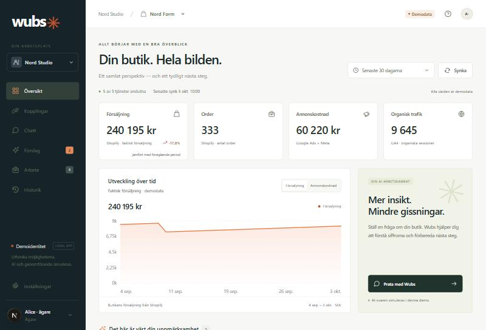
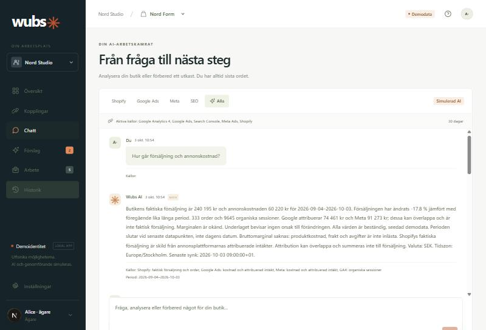
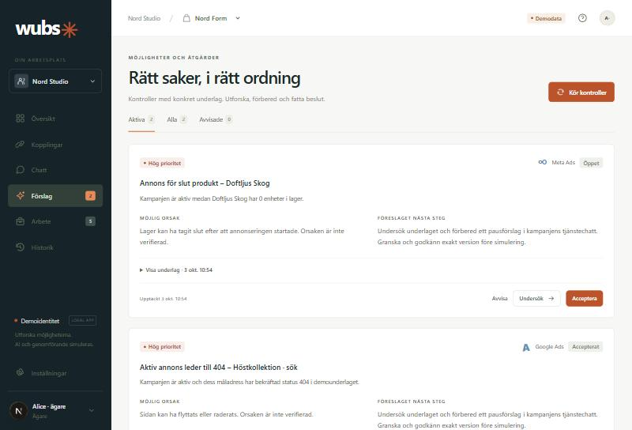
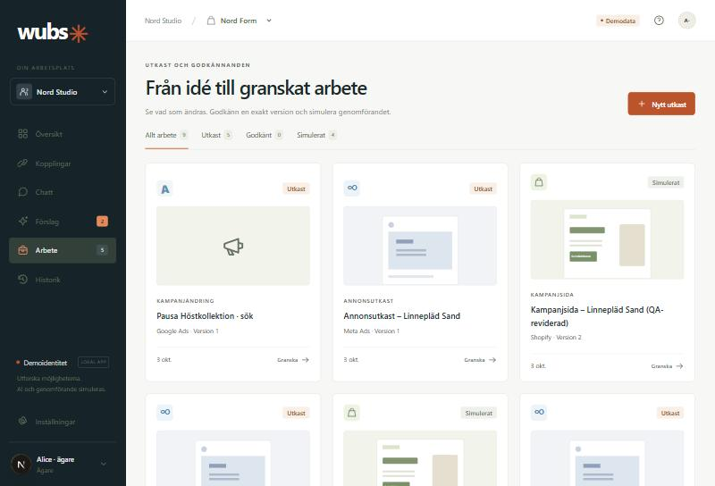
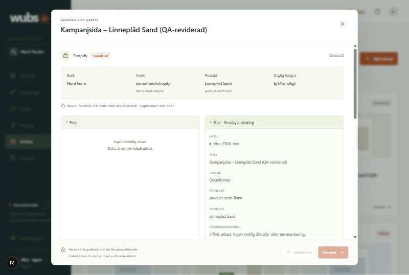
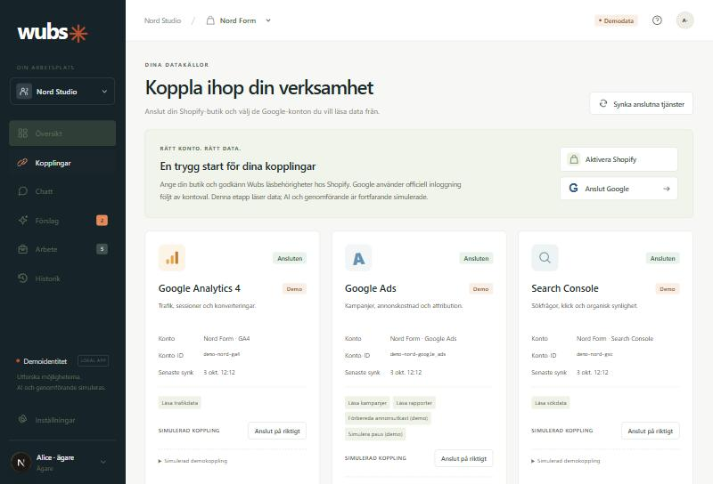
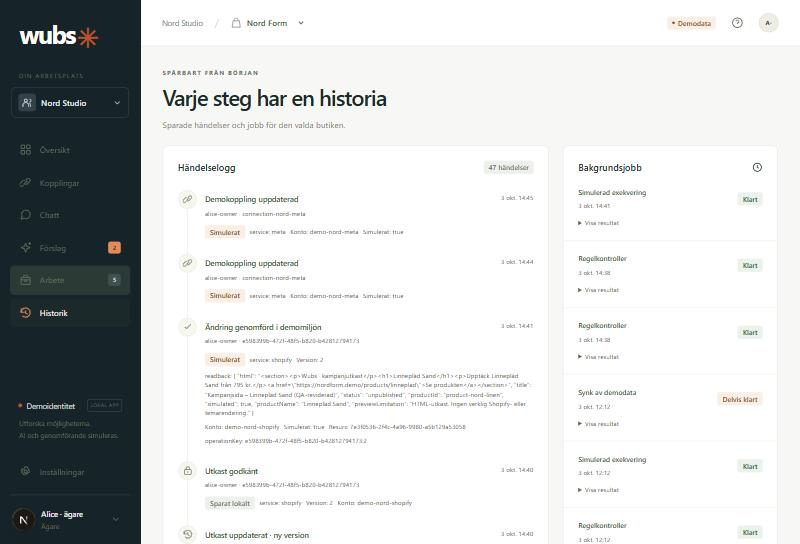

Arbetsplats för ehandel
En svensk AI-arbetsplats för Shopify-butiker och byråer. Dashboard, kopplade tjänster, avgränsad chatt, proaktiva förslag och granskade åtgärder — i ett sammanhang.
Byråer väljer organisation och butik; all verksamhetsdata stannar i rätt sammanhang. Servern kontrollerar organisation, butik, roll och kopplingsrättighet vid varje anrop — inte gränssnittet.

Faktisk butiksförsäljning hålls skild från Google och Metas attribuerade intäkter — de kan överlappa och summeras aldrig ihop. Marginal visas som saknad, inte som noll, eftersom produktkostnad och frakt inte är inlästa.

Fem lägen: Shopify, Google Ads, Meta, SEO och Alla. Varje svar redovisar källa, period, valuta, tidszon och begränsningar, och använder samma beräkning som dashboarden. Observerat problem hålls isär från möjlig orsak.

Två datadrivna kontroller: aktiv annons till en bekräftad 404, och annons för en slutsåld produkt. Varje fynd visar observation, möjlig orsak, evidens och nästa steg. Körs kontrollerna igen dupliceras inte samma aktiva fynd.

Kampanjsidor, annonsutkast och pausförslag samlade med status och version. Inget lämnar Wubs utan att någon har granskat det.

Ett godkännande binds till exakt den version som granskats. Ändrar du något ökar versionen och godkännandet återkallas automatiskt. Genomförandet är atomiskt: resultatet läses tillbaka och loggas i samma transaktion, och ett upprepat anrop ger samma sparade resultat i stället för en ny ändring.

Shopify och Google Ads, Analytics och Search Console kan anslutas på riktigt med officiell inloggning och kontoval. Varje tjänst är märkt Demo eller Riktig koppling, och exakt vilka behörigheter Wubs använder står utskrivet på kortet.

Varje sparat utkast, godkännande, återkallande och genomförande hamnar i en händelselogg med vem, när och vad. Jobb som bara delvis lyckas redovisas som delvis lyckade, inte som klara.
Etapp 1 är en lokal produktgrund. Den här tabellen är avsiktligt ärlig — inget nedan beskrivs som färdigt för att det ser färdigt ut i bilderna.
| Del | Status | Innebörd |
|---|---|---|
| Databas och behörigheter | Riktigt | PostgreSQL med migrationer, beständig data, serverkontrollerad organisation, butik och roll. |
| Godkännandeflödet | Riktigt | Versionsbundna godkännanden, radlås, transaktioner och auditlogg. |
| Shopify och Google | Riktigt, läsande | OAuth, krypterade tokens och synk är implementerade. Ännu inte liveprovade mot verkliga konton. |
| Meta | Simulerat | Endast demo-adapter. Riktig Meta-koppling återstår. |
| AI | Simulerat | Deterministisk lokal motor via samma verktygslager. Ingen extern språkmodell, ingen kostnad. |
| Inloggning | Simulerat | Bytbar demoidentitet för test. Produktionsstart är avsiktligt blockerad. |
| Externa ändringar | Simulerat | Genomförande skapar en lokal opublicerad resurs. Inget publiceras, ingen budget ändras. |
React 19, Drizzle ORM och PostgreSQL. Körs lokalt utan Docker eller API-nycklar.
Isolering mellan organisationer och butiker, rollgränser, återkallade godkännanden och samtidiga dubbla genomföranden.
Roller och konto-ID härleds ur databasen. Direkta API-anrop förbi gränssnittet avvisas.
Butikernas tokens lagras med AES-256-GCM bundet till organisation och butik. Inget hamnar i loggar.
Etapp 2 gör Wubs till en läsande pilot för en riktig butik: verklig inloggning och medlemskap, verifierad Shopify-installation, Meta-koppling och en kostnadsbegränsad språkmodell på samma verktygslager. Godkännandeflödet stannar lokalt tills dess. Publicering och externa ändringar hör till en senare etapp.